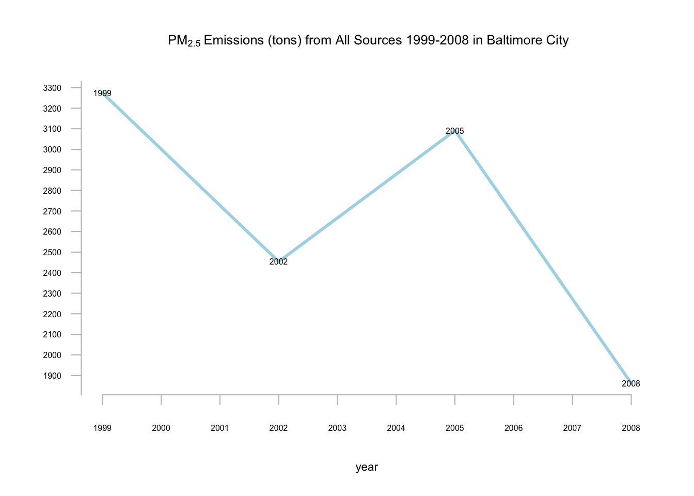
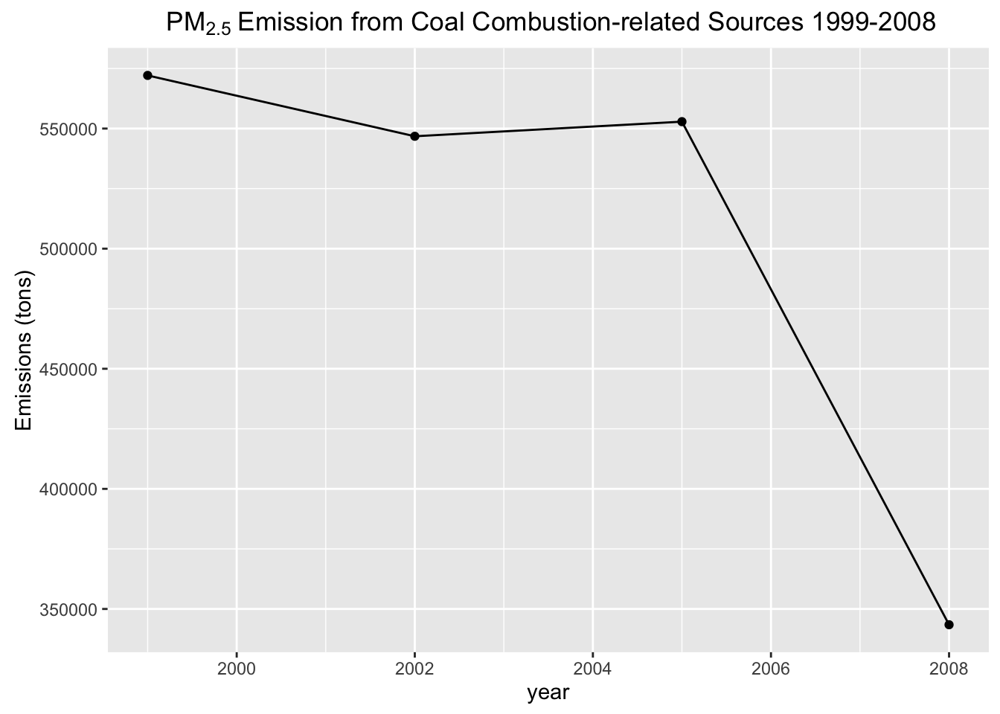

## Total emission in Baltimore City We aggregate the emission amount by year and the condition that the city is Baltimore City fips=='24510' then plot the emissions for the city from 1999-2008.
Sample project
This report visualizes fine particulate matter (PM2.5) emission in the United States over the 10-year period 1999 to 2008,
based on the National Emissions Inventory (NEI) dataset by the Environmental Protection Agency (EPA). For each year and for
each type of PM source, the NEI records how many tons of PM2.5 were emitted from that source over the course of the entire year.
The time periods are 1999, 2002, 2005, and 2008.
Github repository here.
We download, unzip and read the files to NEI (summary) and SCC (source classification) data frames.
|
#Download then unzip |
The first two plots use the base plot package while the rest use ggplot2. ## Total emission in US We aggregate the emission amount by year then plot the total emission from all sources in the United States from 1999-2008.
|
#Aggregate and name columns |
## Total emission in Baltimore City We aggregate the emission amount by year and the condition that the city is Baltimore
City fips=='24510' then plot the emissions for the city from 1999-2008.
|
#Aggregate and name columns |

## Emission by sources in Baltimore City We aggregate the emission amount by year, source of emission and
the condition that the city is Baltimore City fips=='24510' then plot the emissions for the city from
1999-2008.
|
#Aggregate and name columns |

## Emission by coal-combusted sources We filter for Coal in the SCC dataset to get coal-related combustions.
With this index, we aggregate the emission by year for the coal-combusted sources then plot the emissions
from 1999-2008.
|
#Get SCC for coal-related combustions |

## Emission from motor sources in Baltimore City We aggregate the emission amount by year, the condition that the city is
Baltimore City fips=='24510', and that the emission comes from a motor souce NEI$type=='ON-ROAD' then plot the emissions
for the city from 1999-2008.
|
motorem <-aggregate(NEI$Emissions, |
## Comparison of changes in emission between Baltimore City and LA County We aggregate the emission amount by year, city,
and the condition that the emission comes from a motor souce NEI$type=='ON-ROAD'. We filter the dataset so that the data
comes from Baltimore City (fips=='24510') and LA County (fips=='06037') then plot the emissions for the city from 1999-2008.
|
motorem <-aggregate(NEI$Emissions, |
Since we are interested in how emission changes in both cities, we choose emission level in 1999 as the base line for both cities and set the emission equal to 1. Then we plot the changes from 1999 to 2008.
|
#Create changes variable with the baseline being Emissions in 1999 for both cities |